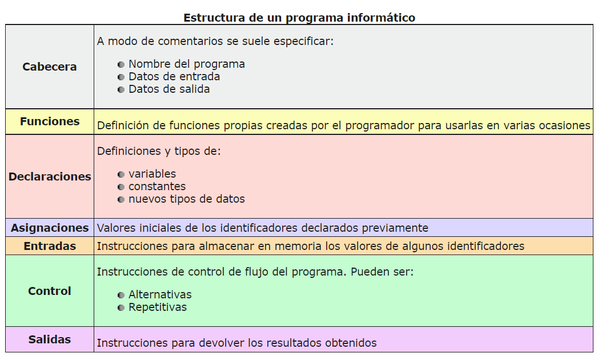
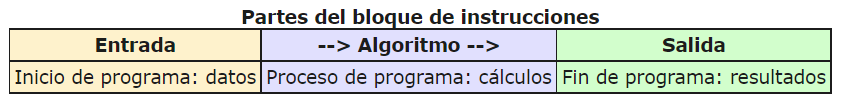

Un programa informático es una secuencia de acciones (instrucciones) que manipulan un conjunto de elementos (datos) para obtener la solución (salida) a un requerimiento o necesidad.

Existen dos partes o bloques principales que componen un programa:
- Bloque de declaraciones + asignaciones: en este se detallan todos los elementos que utiliza el programa (variables o constantes a ser usadas, su tipo y su valor inicial).
- Bloque de instrucciones (entradas + control): acciones u operaciones que se han de llevar a cabo para conseguir los resultados esperados como salida.

El bloque de instrucciones está compuesto a su vez por tres partes, aunque en ocasiones no están perfectamente delimitadas y aparecerán entremezcladas en la secuencia del programa. Podemos localizarlas según su función. Estas son:
- Entrada de datos: instrucciones que almacenan en la memoria interna datos procedentes de un dispositivo externo.
- Proceso o algoritmo: instrucciones que modifican los objetos de entrada y, en ocasiones, creando otros nuevos.
- Salida de resultados: conjunto de instrucciones que toman los datos finales de la memoria interna y los envían a los dispositivos externos.